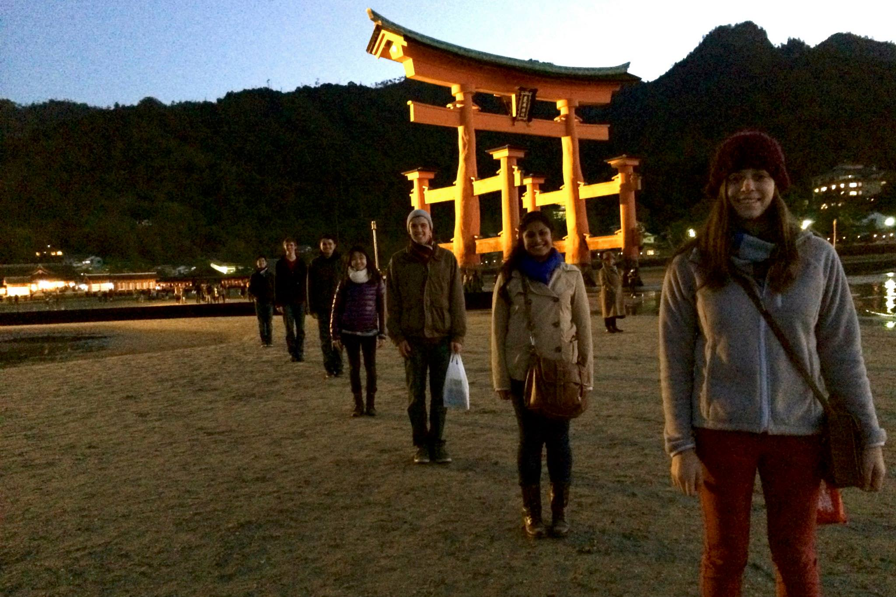
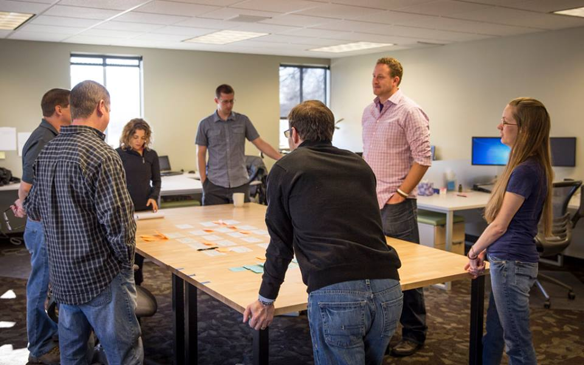
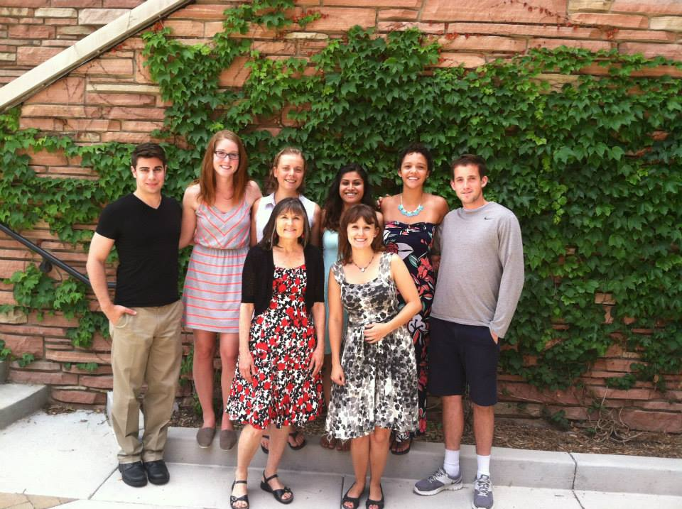
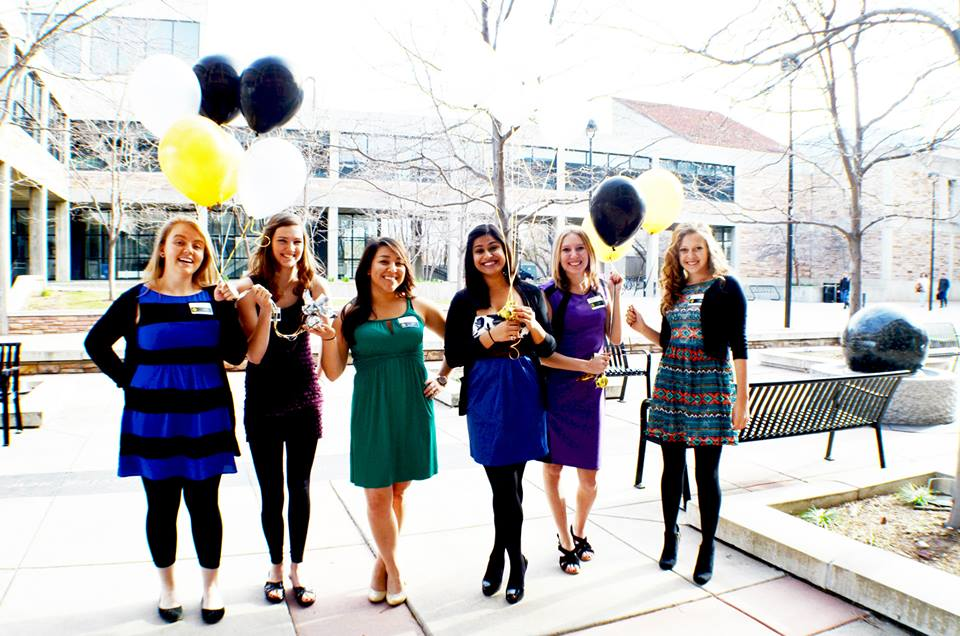

Juhi Ghosh
Boulder, Colorado
USA
juhi.ghosh@colorado.edu
USA
juhi.ghosh@colorado.edu
Hobby
| Photos | Name | Experience |
|---|---|---|
| Bharatnatyam | 10 years |
Travel
Japan

In December of 2013, Juhi took a trip to Japan with her 6 of her close friends.
Work Experiences
| Sweet Memories | Position | Duration | Description |
|---|---|---|---|
|  | Development Intern at DragonDev | 2 years | Responsible for assisting development team with software creation and releases. |
|  | Student Employee at University of Colorado Boulder | 4 years | Responsible for printing Buff Onecards and bus passes for the CU Community. |
Education
| College | Degree | Duration |
|---|---|---|
| University of Colorado Boulder | B.S of Computer Science | Fall 2011 - May 2015 |
Portfolio
| Image | Project Title | Link | Year |
|---|---|---|---|
| Fake Facebook Application | http://obscure-hamlet-6558.herokuapp.com/ | 2013 |
Skills
| Skill | Expertise | Experience |
|---|---|---|
| Python | Proficient level | 2 years years |
| Node JS | Beginner level | 1 Year years |
| Customer Service | Expert level | 4 Years years |
Honors
BOLD Scholarship Recipient

Recipient of CU's BOLD Center's Diversity scholarship.
References
| Reference Name | Reference Contact Info |
|---|---|
| Bonnie Hassler - Buff OneCard Office | contact me |
| Keith Dragon - DragonDev | contact me |